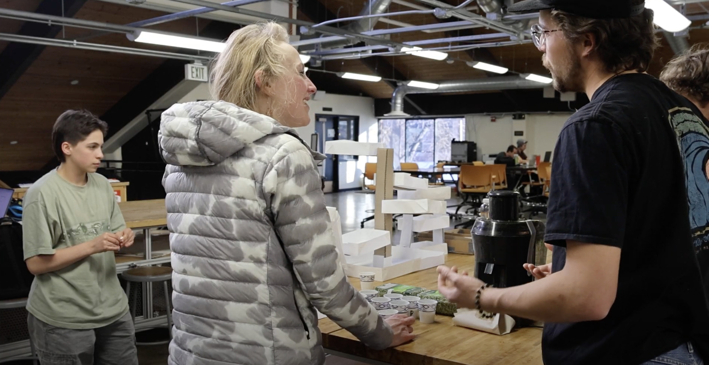
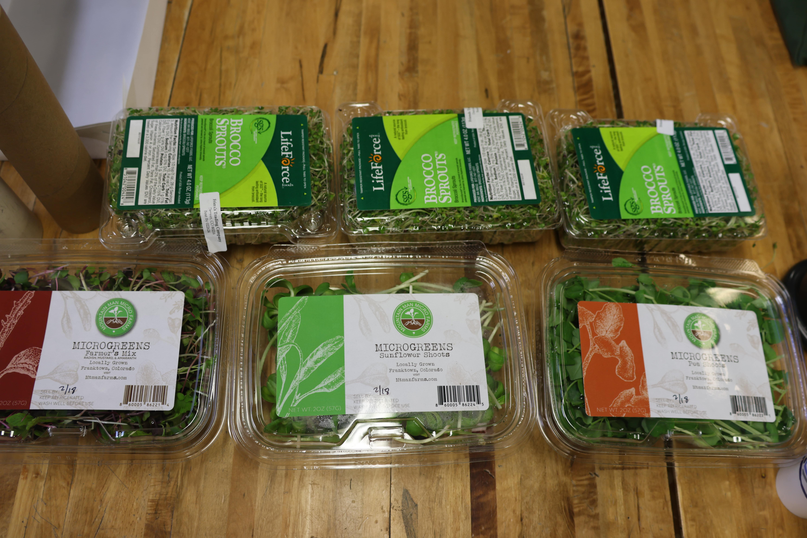
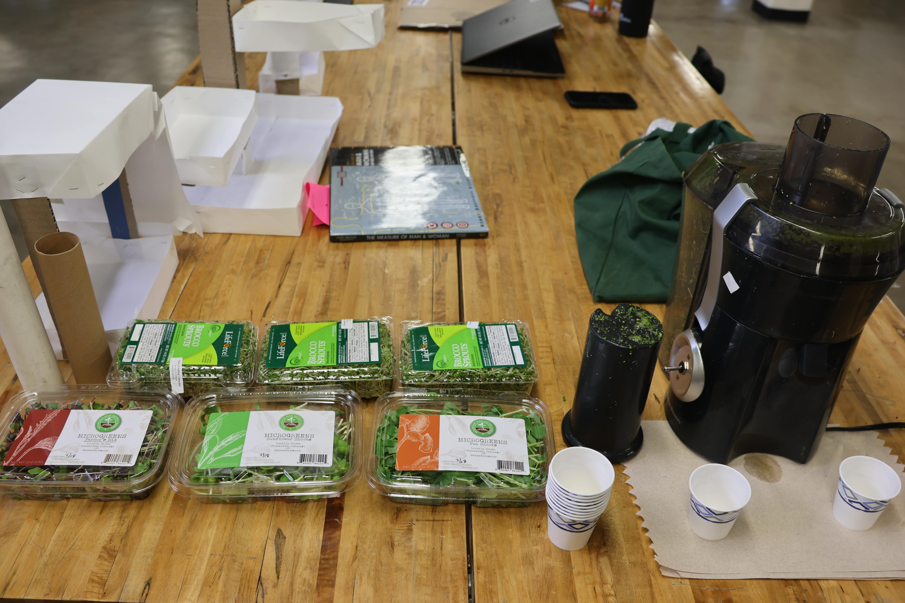
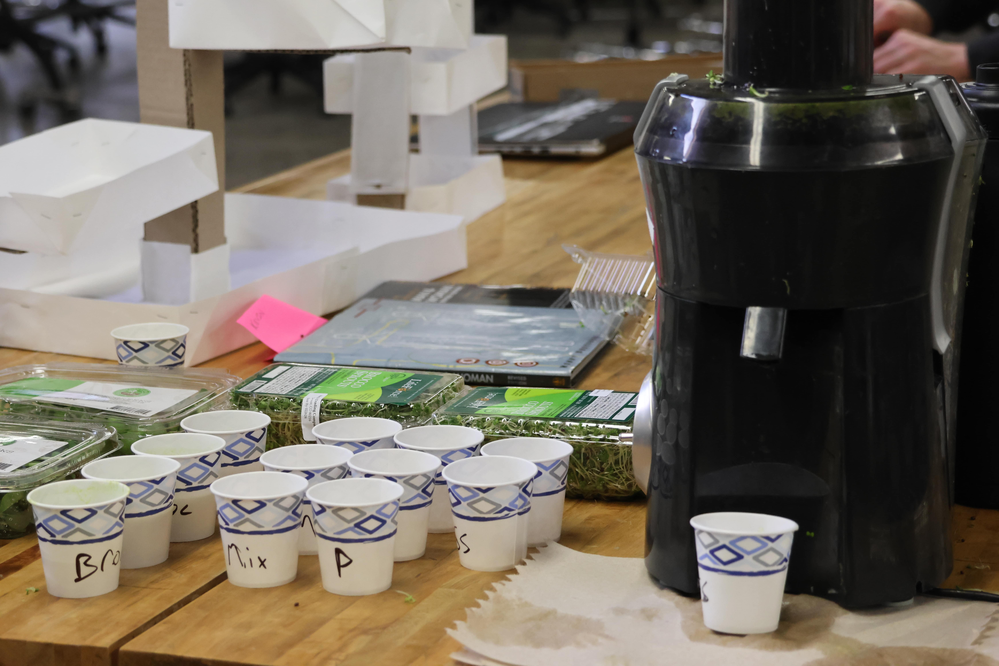
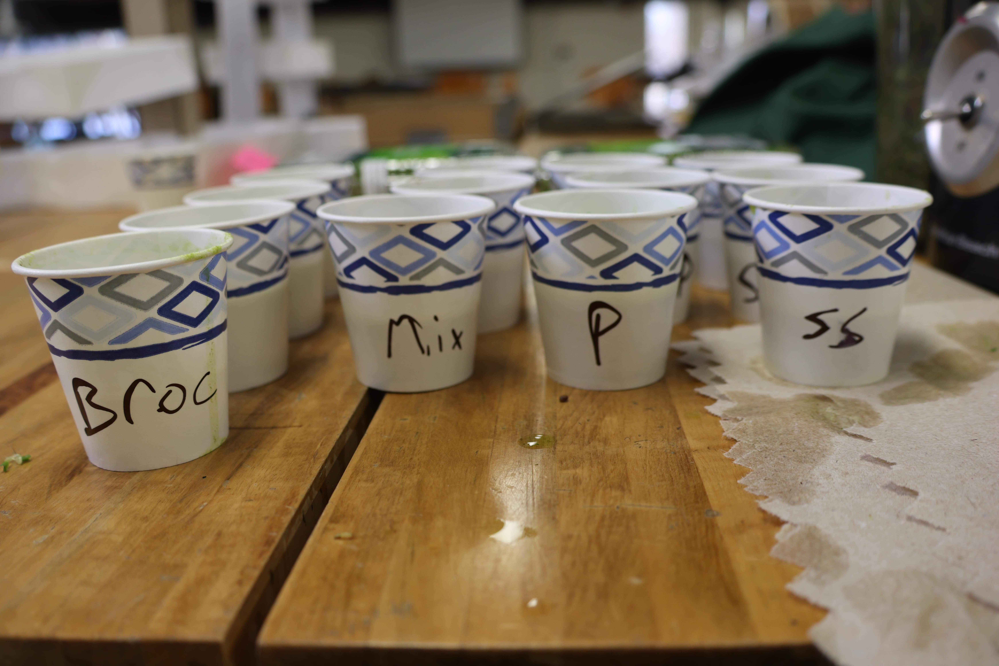

MECN 5055 Advanced Product Design
We aimed to understand sentiments around microgreens, including their taste appeal across different demographics, and the preferred form factors for an indoor gardening system. Our goal was to discern whether a decorative appeal, space efficiency, or yield maximization would drive user preference and satisfaction.
Our pretotype phase was intended to understand specific user inclinations, such as the desirability of yield over aesthetics or compactness. Each pretotype, from a decorative model to one with a built-in juicer, was designed to unveil insights into user priorities and practical needs in indoor gardening solutions.
Five distinct pretotypes emerged from our design process: a stacked model maximizing yield, a visually appealing decorative piece, compact small and large trays for varied space accommodations, and an innovative model combining gardening with juicing functionality. Crafted from paper and cardboard, these models served as tangible representations of potential product directions, offering a visual and tactile feedback mechanism for early-stage user interaction studies.
The testing phase was revealing; female participants showed a clear enthusiasm for the concept, contrasting with the male participants' relative disinterest and taste aversions. This feedback was instrumental in refining our understanding of market needs and preferences.
The testing underscored a definitive preference for the stacked design, pointing towards an innovative solution that married space efficiency with yield maximization. Notably, the feedback showed potential for targeting female demographics more closely, while also considering the integration of functional enhancements, such as wall-mounting capabilities, to broaden the product's appeal. It also presents a challenge to understand why male users are disinterested, and what could be done to counteract this.
With these insights, our path forward is clear: we will advance the stacked garden concept, emphasizing modularity, space efficiency, and aesthetic versatility. The next phase involves 3D printing several concepts at correct scale for more accurate user feedback, supplemented by technological integrations for water and light management in a simpler design, aimed at udnerstanding the challenges of automated growing.